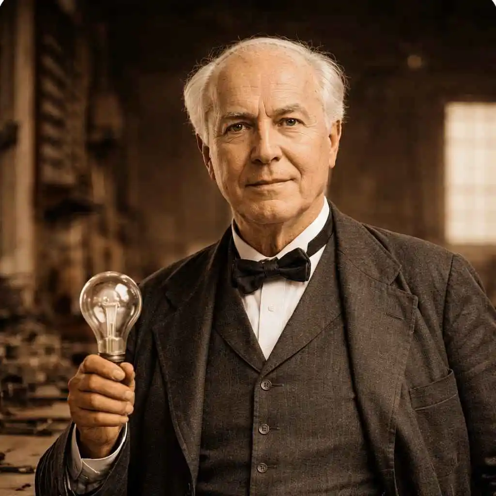
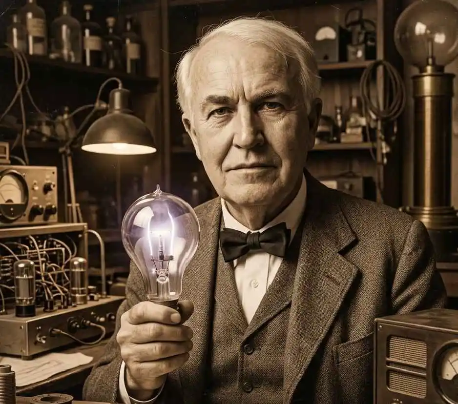

E sta historia no solo habla de un inventor. Habla de alguien que entendió una de las reglas más importantes del éxito empresarial: las grandes fortunas no se construyen únicamente con ideas brillantes, sino con la capacidad de convertir esas ideas en oportunidades que generan valor.
Cuando se menciona a Thomas Alva Edison , casi siempre se habla de la bombilla, el fonógrafo o sus cientos de patentes. Sin embargo, detrás de esos logros existía una visión mucho más valiosa que los propios inventos.
Edison supo identificar dónde estaba el verdadero dinero. Mientras otros se enfocaban únicamente en crear, él pensaba en cómo proteger sus proyectos, financiarlos, expandirlos y mantener una ventaja sobre la competencia.
Esa forma de actuar le permitió construir un imperio empresarial en una época donde la innovación por sí sola no garantizaba el éxito. Su mayor habilidad no fue inventar, sino encontrar la manera de transformar cada avance en una fuente de crecimiento.
Por eso, comprender a Edison va mucho más allá de conocer sus creaciones. Lo realmente interesante es analizar los principios, decisiones y estrategias que utilizó para acumular riqueza y consolidar una posición que pocos lograron alcanzar en su tiempo.
En las siguientes líneas exploraremos precisamente ese aspecto: qué hizo diferente, cómo aprovechó las oportunidades que encontró y cuáles de sus enseñanzas siguen teniendo valor para quienes buscan progresar en el mundo de los negocios y las finanzas.
Thomas Edison no se hizo rico inventando.
Acumuló una considerable riqueza al desarrollar la infraestructura y los modelos de negocio necesarios para comercializar sus innovaciones a gran escala.
- 1. Cómo Thomas Edison construyó un negocio rentable alrededor de la electricidad
- 2. Mentalidad de éxito y negocios: el error estratégico de Thomas Edison
- 3. Estrategias de negocio y riqueza: competencia, poder y reputación en los mercados
- 4. Marca personal, patentes y propiedad intelectual: el modelo de riqueza de Thomas Edison
- 5. Cómo generar ingresos con patentes y marca personal: el caso de Thomas Edison
- 6. Qué errores de Thomas Edison no deberías repetir si quieres tener éxito en los negocios
- 7. Cómo se construye riqueza real: la mentalidad de inversionista de Thomas Edison
- 8. Libertad financiera y riqueza: la verdadera lección de Thomas Edison
Cómo Thomas Edison construyó un negocio rentable alrededor de la electricidad
Para mediados de la década de 1880, un invento era solo una idea más entre millones de posibles innovaciones brillantes.
Sin embargo, en el caso de Thomas Alva Edison, la realidad era que su bombilla, por sí sola, no representaba gran cosa en el mercado.
Una bombilla aislada tenía poco valor comercial. Podía ser un invento extraordinario, pero sin centrales eléctricas, cableado y una red capaz de llevar energía hasta los hogares, seguía siendo una solución incompleta.
En otras palabras, era una gran idea que necesitaba todo un sistema para funcionar.
La mentalidad empresarial que convirtió a Thomas Edison en un magnate de la innovación
Edison nació en 1847. Su padre, Samuel Edison, fue comerciante, y su madre, Nancy Edison, era maestra. Fue ella quien lo educó en casa después de que dejara la escuela tradicional.
No tuvo una formación académica brillante ni títulos prestigiosos. Aprendió leyendo por su cuenta, experimentando y trabajando desde joven.
Vendió periódicos en trenes, trabajó como operador de telégrafo y pasó horas investigando cómo funcionaban los sistemas eléctricos. Esa mezcla entre necesidad económica y curiosidad técnica fue lo que lo llevó al mundo de la innovación práctica.
Ahí se formó su mentalidad: no inventar por romanticismo, sino inventar para construir algo que pudiera venderse, escalarse y dominar el mercado.
La diferencia entre inventar una tecnología y construir un negocio
Durante finales del siglo XIX, Thomas Edison y Nikola Tesla compartían una pasión por la innovación, pero tenían formas muy distintas de entender el éxito.
Tesla estaba enfocado en desarrollar tecnologías revolucionarias. Su atención se centraba en los avances científicos, la eficiencia y las posibilidades que ofrecían sus descubrimientos.
Edison, en cambio, pensaba más allá del invento. No solo se preguntaba cómo funcionaba una tecnología, sino cómo podía producirse, distribuirse y convertirse en un negocio rentable.
Esa diferencia resultó decisiva.
Mientras Tesla perseguía la innovación como un fin en sí mismo, Edison construía sistemas completos alrededor de sus productos. Entendió que una buena idea, por brillante que fuera, tenía pocas posibilidades de triunfar sin una estructura capaz de llevarla al mercado.
La lección sigue siendo válida más de un siglo después: tener una gran idea no es suficiente. También se necesita un modelo de negocio sólido, una estrategia de comercialización efectiva y un sistema capaz de convertir la innovación en valor económico sostenible.
Mentalidad de éxito y negocios: el error estratégico de Thomas Edison
No todo fue brillante en la historia de Edison, y ahí es donde aparecen las lecciones que casi nadie cuenta, pero las más importantes para el lector.
Uno de sus errores más grandes fue subestimar la corriente alterna. Edison apostó todo a la corriente continua porque ya había construido alrededor de ella fábricas, contratos, patentes, empleados y una imagen pública muy fuerte.
Cambiar no era solo una decisión técnica; era aceptar que su sistema podía quedar atrás en un futuro no muy lejano. En ese punto, su mayor fortaleza fue el control, ya que su propio sistema empezó a jugarle en contra.
Mientras Edison defendía su modelo, la corriente alterna avanzaba porque era más barata, más eficiente y mucho más fácil de escalar a grandes distancias.

El mercado no eligió por lealtad ni por fama; eligió lo que resolvía mejor el problema de forma más accesible, llegando hasta el punto donde Edison perdió esa guerra por apego a lo que ya había construido.
Intentó desacreditar la alternativa y resistirse al cambio, pero cuando una solución es superior, tarde o temprano se impone, aunque duela.
Aquí está el aprendizaje real para alguien que quiere desarrollar una mentalidad de riqueza: no basta con crear un buen sistema, también hay que saber cuándo soltarlo, actualizarlo y seguir.
Muchos emprendedores hoy fracasan por la misma razón que Edison en ese momento: confunden persistencia con terquedad. Defienden una idea porque ya invirtieron tiempo, dinero y ego en ella; puede ser una opción muy buena, pero si sale algo más eficiente y económico, el mercado habla solo.
Incluso los más grandes pueden perder cuando dejan de escuchar al sistema económico. Adaptarse no es rendirse, es sobrevivir y seguir creciendo de otro modo.
Estrategias de negocio y riqueza: competencia, poder y reputación en los mercados
Durante la llamada “Guerra de las Corrientes”, Edison no compitió solo con ideas, compitió con miedo. Para proteger su sistema de corriente continua, lanzó campañas públicas agresivas para desacreditar la corriente alterna impulsada por Tesla, exagerando sus riesgos y asociándola con peligro y muerte.
Su objetivo no era demostrar que su tecnología era mejor, sino sembrar desconfianza para frenar la adopción del sistema rival. Dicho caso, puede ser muy discutido hoy en día, sobre cómo se manejaba el marketing en ese entonces.
Desde el punto de vista empresarial, Edison estaba defendiendo su imperio. Tenía inversiones, contratos, patentes y poder en juego. Pero el problema fue el método. Al intentar ganar la batalla a través del desprestigio en lugar de la eficiencia, terminó dañando su imagen a largo plazo como era de esperarse.
El mercado avanzó, la corriente alterna se impuso y la historia no olvidó esas tácticas.
Aquí aparece una lección que muchos empresarios ignoran: la reputación también es un activo financiero que puede perder valor. Puedes ganar dinero rápido usando estrategias agresivas, pero si pierdes credibilidad, el costo aparece después definida en una pregunta, ¿quién pagará los platos rotos? En la nueva era digital esto es aún más brutal.
Una mala reputación no tardará años en destruirse, puede hacerlo en semanas.
La riqueza sin integridad puede crecer, pero no se sostiene cuando depende de una verdad que puede salir a la luz en cualquier momento. Edison ganó mucho, pero este episodio dejó claro que no todas las victorias son limpias ni gratuitas.
Competir es necesario, destruir tu nombre para hacerlo suele ser el peor negocio.
Marca personal, patentes y propiedad intelectual: el modelo de riqueza de Thomas Edison
Edison no trabajaba solo, y esa fue una de sus decisiones más inteligentes. Mientras muchos inventores de su época operaban como genios solitarios, él construyó uno de los primeros laboratorios industriales organizados en equipo, donde ingenieros, técnicos y especialistas trabajaban bajo una misma visión.
Usó esta estrategia al comprender que una sola mente tiene límites, pero un sistema bien dirigido puede producir resultados de forma constante y masiva.
En lugar de intentar hacerlo todo, Edison se enfocó en dirigir, probar, coordinar y comercializar. Delegaba tareas técnicas, repetitivas y experimentales, mientras él mantenía el control estratégico.
Eso le permitió acelerar procesos, lanzar más patentes y moverse más rápido que sus competidores. No solo inventaba, multiplicaba su capacidad de producción intelectual.
Ese modelo sentó las bases de lo que después se convertiría en empresas como General Electric. Más que un taller, creó una estructura que transformaba ideas en productos listos para el mercado.
Ahí está la diferencia entre alguien talentoso y alguien que construye riqueza: uno crea, el otro escala.
La lección es directa. El verdadero millonario no es el que trabaja más horas, es el que construye equipos y sistemas que trabajan incluso cuando él no está presente; esto es oro puro para tener en cuenta.
Si quieres escalar ingresos, no basta con ser bueno en algo; necesitas aprender a delegar, organizar talento y convertir esfuerzo en estructura. La delegación no es debilidad, es multiplicación, es aceleración y avance.
Cómo generar ingresos con patentes y marca personal: el caso de Thomas Edison
Edison registró más de 1.000 patentes, y eso no fue casualidad ni simple obsesión por inventar. Cada patente era una barrera de entrada para sus competidores y una fuente de ingresos protegida por ley.
No solo creaba tecnología, aseguraba el control comercial de esa tecnología. Entendió que quien controla la propiedad intelectual controla el mercado. Mientras otros inventaban y vendían una vez, él construía activos que podían licenciarse, explotarse y generar flujo durante años.
Eso, traducido al presente, es mentalidad de activos. Hoy el equivalente no son solo máquinas o bombillas, sino propiedad intelectual digital, software, cursos, libros, marcas registradas, contenido monetizable.
No se trata de trabajar por dinero todo el tiempo, sino de crear algo que siga produciendo incluso cuando no estás activo. Las patentes de Edison eran su sistema de ingresos pasivos industriales.
Pero no todo fue técnico. Edison también entendió el poder de la percepción. Cultivó su imagen pública como “el genio”, aparecía en prensa, cuidaba su narrativa y sabía mantenerse relevante.
No solo innovaba, sabía posicionarse estratégicamente frente al público y los inversionistas. Su nombre se convirtió en sinónimo de innovación.
En la economía actual, eso se traduce en algo muy claro: marca personal es un activo. Autoridad es poder de negociación. Visibilidad es acceso a oportunidades.
Puedes tener talento, pero si nadie te conoce, el mercado no te paga lo que vales. Edison protegía sus ideas con patentes y protegía su valor con posicionamiento. Esa combinación fue parte clave de su riqueza.
Qué errores de Thomas Edison no deberías repetir si quieres tener éxito en los negocios
Un enfoque millonario también implica saber qué no replicar. Edison fue brillante en estrategia y ejecución, pero su estilo de vida no era equilibrado.
No priorizaba descanso ni relaciones personales, trabajaba jornadas extremas y exigía lo mismo a su equipo. En su época eso era visto como disciplina absoluta; hoy sabemos que el desgaste constante tiene un costo físico y mental que tarde o temprano pasa factura.
Además, su estilo competitivo era agresivo. Defendía su posición con dureza y no dudaba en confrontar públicamente a rivales cuando sus intereses estaban en juego.
Esa mentalidad le permitió ganar terreno, pero también afectó su reputación en ciertos momentos. El poder sin inteligencia emocional puede construir imperios, pero también generar enemigos innecesarios.
El éxito moderno exige algo más completo. No basta con producir y escalar; hoy influyen la salud, la reputación y la capacidad de liderar sin destruir puentes.
Un empresario agotado no toma buenas decisiones. Un líder impulsivo pierde oportunidades. Y una marca asociada con conflicto constante pierde confianza en el mercado.
La riqueza actual no es solo dinero acumulado. Es libertad de tiempo, estabilidad mental y capacidad de elegir cómo vivir.
Aprender de Edison no significa copiarlo todo, significa entender qué funcionó en su contexto y qué, en el mundo actual, sería un error repetir.

Cómo se construye riqueza real: la mentalidad de inversionista de Thomas Edison
Si miramos la historia de Edison con ojos emocionales, vemos a un inventor polémico, competitivo y obsesivo. Pero si la analizamos con la cabeza fría de un inversionista, la lectura cambia por completo.
No fue el más brillante técnicamente, no fue siempre el más ético y tampoco fue el autor único de muchas ideas que llevan su nombre. Desde ese punto de vista, hay figuras más puras, más talentosas y más admirables.
Sin embargo, el mercado no premia pureza ni talento aislado, premia resultados. Edison entendió mejor que nadie cómo convertir ideas en activos, cómo proteger esos activos y cómo hacer que trabajaran para él durante años.
Mientras otros se quedaban en el laboratorio, él pensaba en contratos, patentes, distribución y control. No era el mejor inventando, era el mejor capturando valor.
Visto como inversionista, Edison fue excepcional en tres cosas: comercializar, proteger y sistematizar.
Supo leer hacia dónde iba el dinero, no solo hacia dónde iba la tecnología. Y eso marca la diferencia entre alguien brillante y alguien rico. La historia lo demuestra una y otra vez: los millones no los genera la idea, los genera la estructura que se construye alrededor de ella, eso es pensamiento estratégico.
Esa es la lección final. Si quieres pensar como inversionista, no preguntes solo qué tan buena es una idea.
Pregunta si puede escalar, si puede protegerse y si puede convertirse en un sistema que genere valor constante. Eso es lo que separa a los que tienen buenas ideas de los que construyen riqueza real.
Libertad financiera y riqueza: la verdadera lección de Thomas Edison
Edison entendió algo que muchos aún no comprenden, y esa diferencia separa a los que crean de los que acumulan riqueza: la innovación sin monetización es solo un hobby. Tener ideas, talento o creatividad no garantiza resultados financieros si no existe una estructura que las convierta en valor real.
Edison no fue recordado por tener ideas, sino por saber qué hacer con ellas.
A lo largo de su historia se repite el mismo patrón: pensar en sistemas, no en esfuerzos aislados. No dependía de un solo invento, construía redes completas alrededor de cada idea.
Protegía su propiedad intelectual, cuidaba su posicionamiento, delegaba trabajo y ajustaba su estrategia cuando el mercado lo exigía, incluso cuando eso implicaba reconocer errores.
Si quieres construir riqueza hoy, la lección es clara. Piensa en sistemas antes que en productos. Protege lo que creas antes de escalarlo. Construye una marca que respalde tu valor.
Itera sin ego y aprende rápido de tus errores, porque el mercado no espera a nadie. El dinero fluye hacia estructuras bien pensadas, no hacia buenas intenciones.
La historia de Edison no es la historia de una bombilla. Es la historia de cómo convertir ideas en capital, trabajo en activos y esfuerzo en libertad.
Y esa es, al final, la verdadera mentalidad financiera que vale la pena desarrollar.
Publicado originalmente el 18 de febrero de 2026. Este análisis forma parte de la colección permanente de estudios sobre riqueza, emprendimiento y mentalidad empresarial.